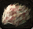

Labowski and Kax in Royal Street (K-11)
NEED |
ITEM |
QT. |
|---|---|---|
|  | Bloody Pelt |
10 |
Need:
- 25-40 Level
- Bloody pelt - x10
Info:
- Daily quest
- Talk with the enkidu, then with the lapin Kax.
- Drop from [Lv28 Cape Jackals] at Nelstadt Plains, D-9 and E-9
- Drop from [Lv28 Cape Jackals] at Himurart Desert, G-6
- Drop from [Lv32 Morax] in Himurart Desert, around G-10
- Drop from [Lv33 Ratling Sentinel] in Himurart Desert, around H-13
Reward:
- 30000 xp